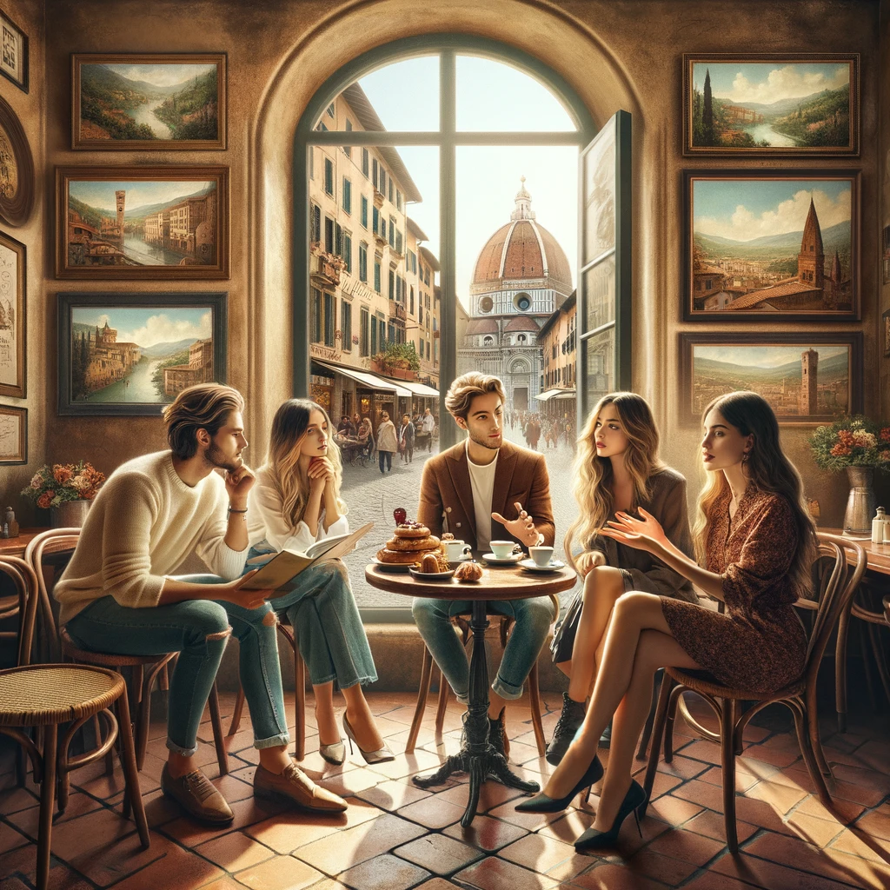

<>

- Se potessi scegliere qualsiasi posto, dove organizzeresti una festa a sorpresa per Elena?
- Farei la festa in un piccolo ristorante italiano. Che ne pensi?
- Sofia: Sarebbe perfetto. E se invitassimo anche i suoi vecchi amici del liceo?
- Lucia: E se il nostro budget lo permettesse, forse potremmo assumere una piccola band?
- Giacomo: Che ne dici di fare un video con tutti i suoi ricordi più belli?
- Maria: Dovremmo chiedere a tutti di contribuire con le foto. Pensi che potremmo organizzare tutto in tempo?
- Sofia: Se iniziassimo a pianificare subito, credo che ce la faremmo. Chi potrebbe occuparsi del video?
- Giacomo: Potrei occuparmene io. Maria, ti dispiacerebbe occuparti degli inviti?
- Lucia: Allora, cercherei un ristorante e preparerei il menù. Dovrei prenotare per questo sabato?
- Sofia: Mi piace tantissimo! E potrei conoscere una band che suona le canzoni preferite di Elena.
- Maria: Fantastico! E penso che potrei ottenere un buon prezzo per alcune decorazioni che si abbinano all'ambiente del ristorante.
- Giacomo: Se dividessimo i compiti, rendere la notte indimenticabile per Elena.
- Lucia: Dovremmo anche considerare un tema. Se Elena potesse andare da qualche parte, dove sarebbe?
- Sofia: Parla sempre di Parigi. E se facessimo una festa a tema parigino?
- Maria: Sì, prenota. Se tutti collaborassimo, sarebbe davvero una festa indimenticabile per Elena